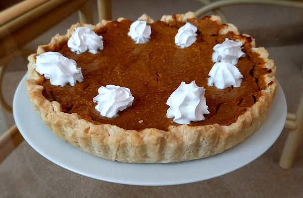

Pumpkin Pie
Ingredients:
-
1 and 1/2 Cups of All Purpose Flour
-
1/2 tsp of Sea Salt
-
1/2 Cup of solid (not melted) mild coconut oil, chopped up small
-
Filling: 1 and 1/2 Cups of pumpkin puree
-
1 and 1/2 Cups of Pumpkin Puree
-
150g of Firm Silken Tofu
-
3/4 Cup of Maple Syrup
-
2 tbsp of Cornstarch
-
1 and 1/4 tsp of Cinnamon
-
1 tsp of Ground Ginger
-
1 tsp of Vanilla Extract
-
1/4 tsp of Sea Salt
-
For Decoration: Whipped Cream

Method:
-
Mix the flour, salt in a large bowl.
-
Add chopped coconut oil and cut it into the flour using a pastry cutter (or two knives) and mix
until you obtain a sandy texture that clumps together when you grab a handful, with no large lumps
of fat left.
-
Slowly and very gradually trickle in some ice cold water incorporating it into the flour using a
fork. Keep going until the dough is moist enough that it can be brought together by hand – clump a
bit of mixture with your hand, if it sticks together, you’ve added enough water.
-
Empty your bowl onto a work surface and bring all the dough together using your hands. Form the
dough into a flattened disc and refrigerate for at least 30-45 minutes.
-
Gently and slowly roll the dough out on a lightly floured surface. You may want to do it between two
sheets of baking paper as it stops the dough sticking to the surface.
-
Roll the dough into a large circle 2cm bigger than the pie dish. Roll the dough sheet over the
rolling pin, place the rolling pin over the pie dish and unroll it gently. Line the dish and fold
any excess you get at the edges under so that you end up with thick edges. Then go over the edge and
crimp the edges and pierce the bottom witha fork.
-
Heat up the oven and place your pie in the freezer for another 15 minutes or so.
-
Remove the pie dish from the freezer, place a piece of baking paper at the bottom of the dish. Blind
bake for 10-15 minutes.
-
Carefully remove the baking paper inserted and return the pie to the oven for another 10 minutes.
Remove it from the oven and set aside while you make your filling.
-
Place all the filling ingredients in a food processor and blend until super smooth.
-
Fill the pre-baked pie crust with the filling.
-
Bake for about 35-40 minutes, until the edges look set but the centre can still be a little soft.
Cool the pie completely before cutting or decorating.
-
Once cool, decorte with the whipped cream.